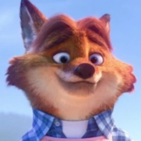
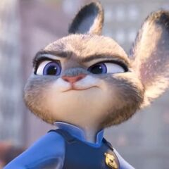
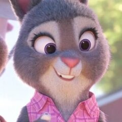
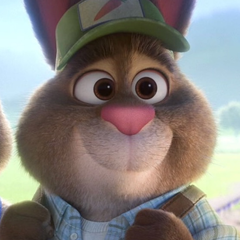

Datos personales
Nombre:
Gideon
Apellido:
Grey
Especie:
Zorro
Residencia:
Las Madrigueras, Bunnyburrow
Ocupación:
Pastelero, repostero y socio de negocios de Bonnie Hopps y Stu Hopps

"Soy Gideon Grey, un zorro que reside en Bunnyburrow el cual se dedica a la pasletería y repostería. Mi especialidad son las tartas de frutos silvestres, ¡Los conejos del pueblo las aman!"
Amigos
Judy Hopps, Bonnie Hopps y Stu Hopps


